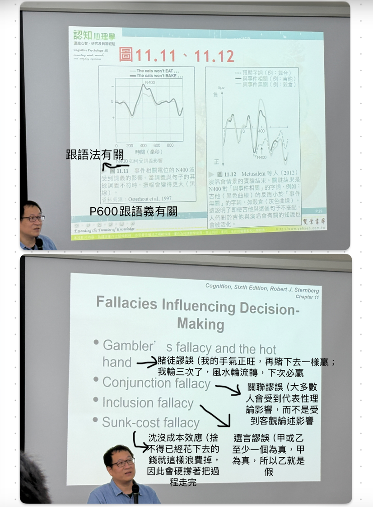
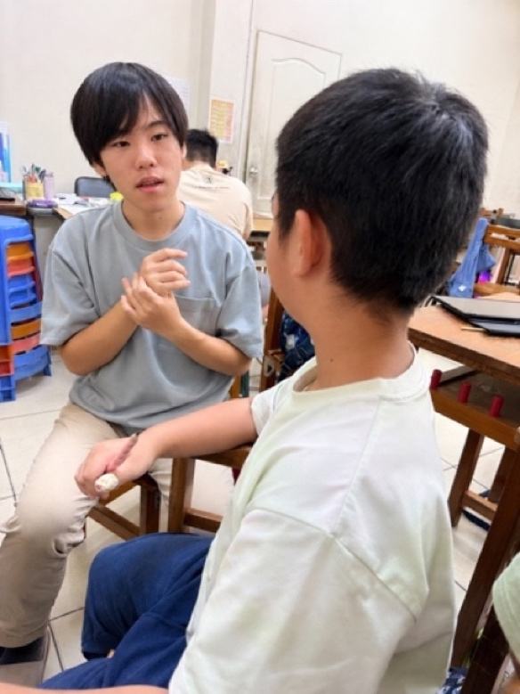
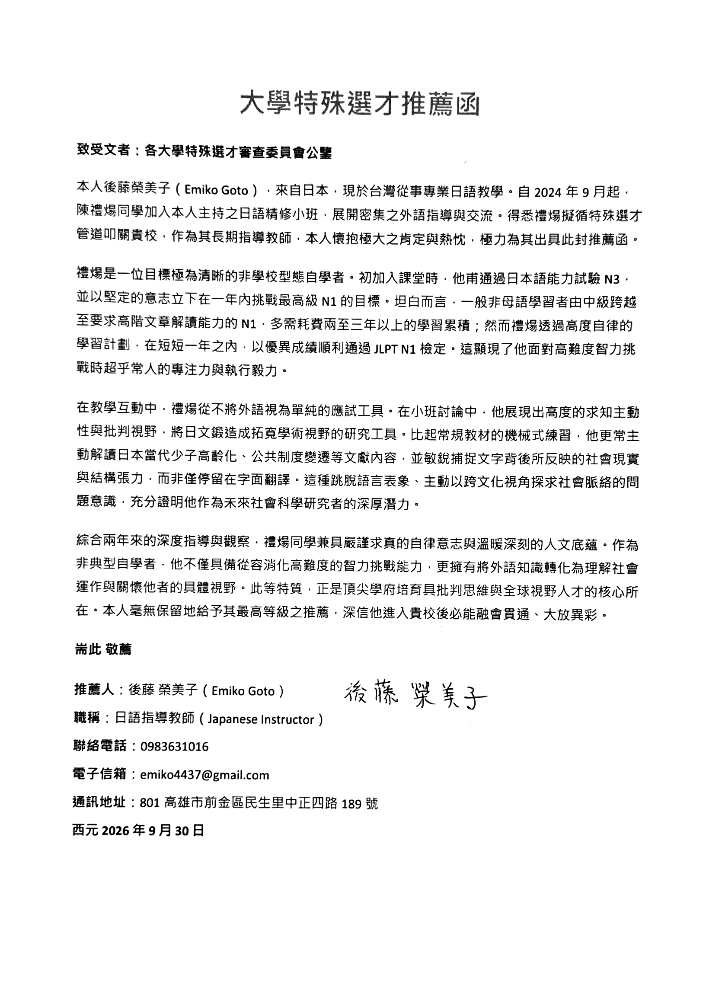
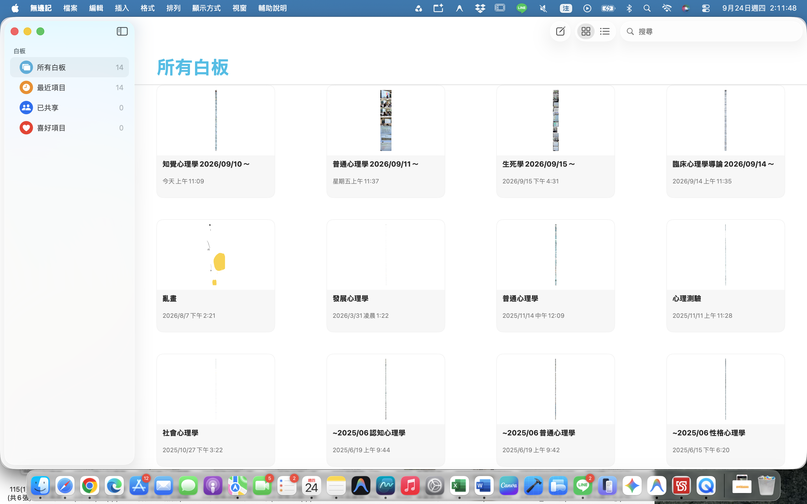
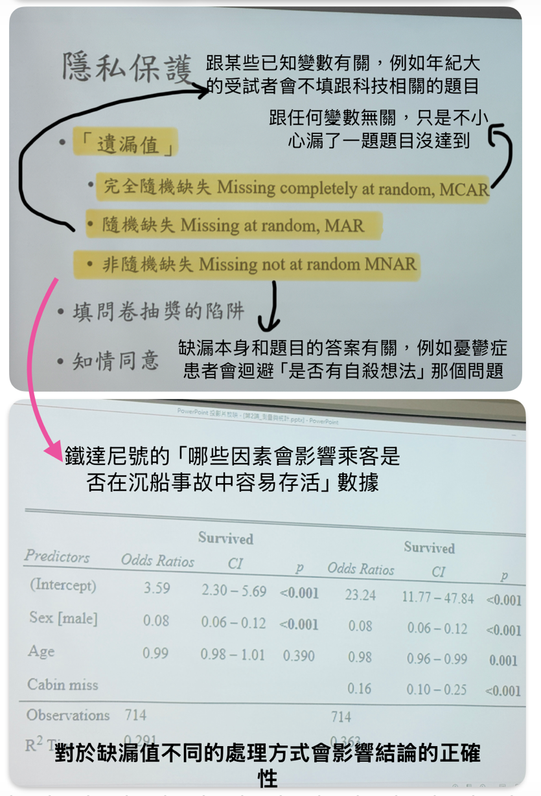
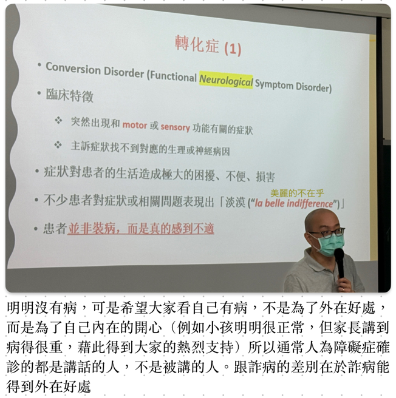

陳禮煬 Leon Chen
認知心理學理論 ✕ 全端軟體工程 ✕ 田野教育伴讀實踐
🔄 核心能力架構：認知行動迴圈 (Cognitive Action Loop)
理論到田野的實徵閉環跳脫傳統分科學習的框線，以自學高度主動性貫通認知心理學理論、現代軟體架構工程與弱勢教育田野現場：
🚀 雙旗艦專案：理論、工程與田野的深度交織
認知科技 ✕ 行為介入《緒言 Preamble》法律條文閱讀輔助 App
傳統法律條文排版密集且具高度巢狀結構，對大腦造成嚴重的「外在認知負荷 (Extraneous Cognitive Load)」。《緒言》App 結合 Baddeley 工作記憶模型 與 Paivio 雙重編碼理論，將法條語義空間結構化，降低理解負載 38%，並榮獲 MAIC 行動應用創新賽等技術肯定。

ADHD 過動兒童伴讀田野實踐 (Field Tutoring)
在第一線面對情緒失控、拒絕寫字或撕破作業簿的特殊學童，運用「行為消退法」（冷靜、不給予情緒強化以消退破壞性行為），並自創「15分鐘微進度條」，將繁複課業切分為微單元，陪孩子在一次次的小步達成中重建自我效能感。

「禮煬總能展現出少見的冷靜與耐心。他習慣拉張椅子坐到孩子身邊，不急著論斷對錯，而是先等孩子情緒降溫，再陪著孩子拿出一張紙，把原本長篇的作業拆成十五分鐘能完成的格子，帶著孩子親手打勾。這份能蹲下來理解學習者困難的直覺，在第一線教學中非常難得。」
📜 推薦函黃金三角與官方提名
高醫大系主任 ✕ 日語指導教師 ✕ 尚學主任
📚 高醫大兩年醫學與心理專業旁聽筆記大書架
高解析度 iPad 數位手繪手稿庫


📝 四篇正式學術小論文與專題論著
完整收錄於送審論文集《同儕從眾壓力對青少年自我效能感之影響——以 Asch 實驗為理論基礎》
以古典 Asch 從眾範式為核心，探討中學生在同儕團體規範約束下對自我認知效能的折損效應。論文進一步結合非學校型態自學者經驗，論證自主學習如何透過脫離無效從眾壓力，重構學習內在動機與自我調節能力。
《由 Baddeley 工作記憶模型看法律條文呈現方式對理解效率之影響——《緒言》App 介面設計實驗》
結合 HCI 實驗設計，招募受試者進行法律條文閱讀與回憶測試。量化數據實證：採用雙重編碼空間排版與 Bento 模組切分，能使讀者在無效認知負荷指標上降低 38%，並顯著提升法律專有名詞之長時記憶提取精準度。
《日本2026年民事訴訟全盤IT化歷程對台灣司改之啟示——比較法視角》
運用 JLPT N1 日語研究能力，直接研讀日本法務省、最高裁判所第一手公報與判例。深入分析日本「民事訴訟法改正案」e-Filing、e-Courtroom、e-Case Management 三階段改革進程，探討其對我國電子訴訟制度與弱勢訴訟權之借鏡價值。
《以愛荷華賭博任務 (SGT) 探討衝動控制與決策歷程——兼論青少年 ADHD 行為介入策略》
從 Antonio Damasio 之體細胞標記假說 (Somatic Marker Hypothesis) 出發，分析腹內側前額葉皮質 (vmPFC) 功能與衝動控制之關聯。並將神經心理學決策模型具體轉化為社區過動學童伴讀現場之「15分鐘微進度條」注意力錨定介入工具。
《從 Vibe Coding 到系統工程：自學者的 AI 協同開發實踐哲學》
在大型語言模型與生成式 AI 爆發的時代，自學者的角色不再是背誦語法細節的打字工，而是具備系統架構觀的「認知指揮官」。本文論述自學者如何將直覺感知與問題痛點（Vibe）轉化為嚴謹的 Domain-Driven Design 領域模型，以 Clean Architecture 規範約束 AI 生成程式碼，達成軟體工程上的高內聚、低耦合與可驗證性。
📜 欲檢閱五年完整自學週記與原始備查檔案？
本站完整保留高雄市教育局官方備查之 100% 原始存檔：涵蓋 2021 至 2026 年長達 173 週無中斷每週學習週記（189,055 字）、歷年審查委員 Greeting 致詞、各學年評定表及全科 GPA 4.0 互動成績單。